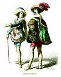
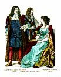

Unit
2 - Theatre History
Module
1: Understanding Historical Context
Lesson
3 - Neo-Classical Theatre
Introduction:
Through the creation of a playbill and blocking work, students
get hands-on interaction with the period concepts. This lesson
uses a quick quiz to help check understanding of the period.
|
|
This
icon indicates an advanced print resource you can refer
to for more in depth research information. It has been provided
courtesy of Dr. Moira Day, University of Saskatchewan, Theatre
Department. |
Activities:
Activity
One - Learning about the Period
Read the
notes on this page about the Period and then try the quiz.
Historical
Background Notes:
- Classicism
is a philosophy of art and life that emphasizes order, balance
and simplicity.
- Ancient
Greeks were the first great classicists - later, the Romans,
French, English and others produced classical movements.
- the
Restoration period marked a Neoclassical movement
(1600 to 1700), modeled on the classics of Greece and Rome.
- reason
and restraint became the standard for writing.
- John
Dryden became the leading poet, critic and dramatist - upholding
common sense, moderation and conformity as the ideal.
- Charles
II encouraged new playhouses to be built and a renewed interest
in drama.
- noted
for elaborate scenery, costumes and lighting.
- women
for the first time were allowed on stage to act!
- actors
employed highly particular ways of standing, speaking and
gesturing.
- two
types of drama: 1) the heroic tragedy and 2) the comedy of
manners.
 The
Discovery
The
Discovery
by Francis Sheridan |

She
Stoops to Conquer
by Oliver Goldsmith
|

The
Country Wife
by William Wycherley
|
-
heroes
and heroines faced exaggerated conflicts between love
and honour.
-
characters
expressed noble ideals in high sounding speeches (couplets).
-
example:
Dryden, All for Love, based on Shakespeare's
Antony and Cleopatra.
|
- pictures
the carefree, immoral world of the aristocracy.
- brilliant,
witty comedies.
- "virtue"
comes form succeeding in catching a lover or cuckolding
a husband without getting caught
- "honor"
comes from reputation, not integrity.
- "witty"—saying
things in clever ways.
- influenced
by the comedies of Moliere in France.
- example:
Tartuffe, by Moliere; or The Country Wife,
by Wycherley.
|
| Note:
The Romantic period (1798 - 1832) featured writers
who rebelled against the rules of classicism. They insisted
every author should be free to write as they pleased. They
emphasized feeling and emotion rather than reason and restraint. |
Think
you know the time period? Take this Quiz! |
Assignment
Two - Playbill
Research
clothing styles from the 1600 and 1700's.
Look also for set designs from performances of the period. Often,
contemporary theatre companies stage plays from the Restoration
period, and it may be possible to find images on web sites.
Use
this research to design a playbill for a play of the period. A
playbill combines some of the elements of an advertising poster
and a program. Good examples of period playbills can be found
on some of the Shakespeare sites in the links
page.
When you
use images of the net, you must be clear where you obtain the
image from. A URL and credit must be used. Technically, written
permission is required. The image you see bellow is used with
written permission.
(this image
is from www.costumegallery.com)
Activity
Three - "Restoration Exercise I"
(from Character Building, Colborne &
Ramsden, ITP Nelson, Ontario, 1997)
- You
need to bring
some props to use.
- Girls
will need a fan and shoes with heels; boys will need a large
handkerchief, knee length socks and a walking stick (substitute
a meter stick, cloth napkins and paper fans if need be).
- Read
about the period and understand the social customs of the
time, then to try to carry on in this manner. Take time to
"dress" and prepare. Girls should be in long skirts
and the boys should tuck their pants into their socks up to
the knees. Pointy shoes with a heel would be ideal as well.
- Once
you are dressed read the lessons in each of the following:
Sitting - forward third of the chair, back straight.
Standing - women with feet together; men with one foot
ahead of the other, toes turned out to display the calf to
full advantage. Hands are always held above the waist, especially
for the women to be able to use their fans, and for the men
to show off their handkerchiefs and jewelry.
Walking - toes pointed, on the balls of the feet; women
particularly take small steps to give the impression of gliding
rather than walking. When couples walk together, the woman
lays her open hand palm down on the back of the man's open
hand, which is also palm down.
Bowing and Curtsying - women have one foot 90 degree
angle to the other, back straight, knees bent, head and eyes
lowered; men have one leg forward and straight, rear leg bent,
straight back and flourish with the arm (possibly with the
handkerchief).
- After
practicing the above movements - with "Attitude"
- have the students walk about the room in couples as if they
are at a fancy party, meeting other couples, acknowledging
them with a bow or curtsy, and moving along.
"Restoration
Exercise II"
(from Character Building, Colborne & Ramsden,
ITP Nelson, Ontario, 1997)
Select
a scene from one of the Restoration comedies to perform. Scenes
from Marriage a la Mode by John Dryden, The School for
Scandal and The Rivals by Richard Brinsley Sheridan,
and The Beaux Strategem by George Farquhar are recommended
sources.
 |
Journal:
Imagine
yourself as an actor at this time in history. What would
be your biggest challenge (either male or female)?
Why do theatre companies still present plays from this period?
What might audiences appreciate? Or relate to?
|
Evaluation:
Image portfolio and playbill design should be evaluated
depending on the amount of time the class spends on the project.
The scene presentation could be out of 20-30 marks (Potential
areas for evaluation include: period style, memorization,
group work or use of work time).
Next Lesson / Previous
Lesson
|